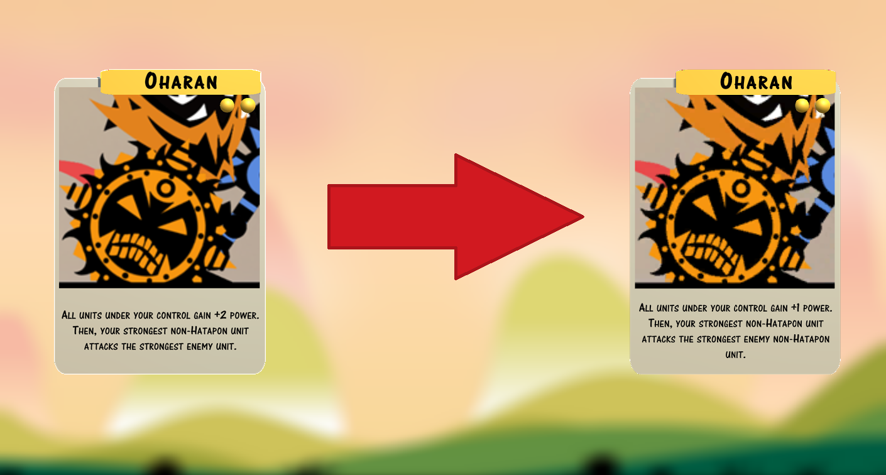
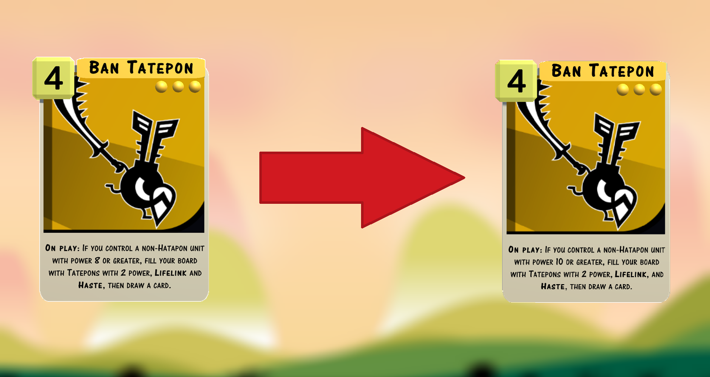
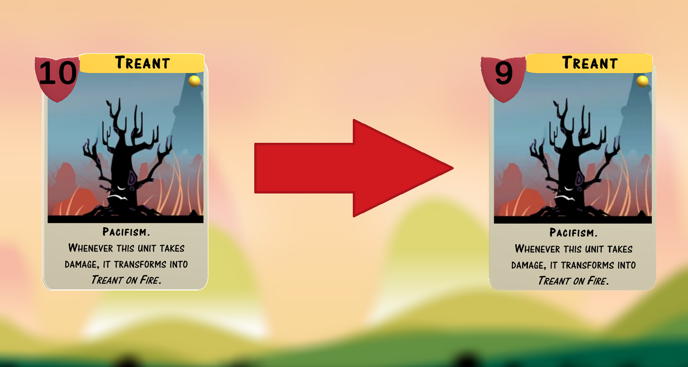
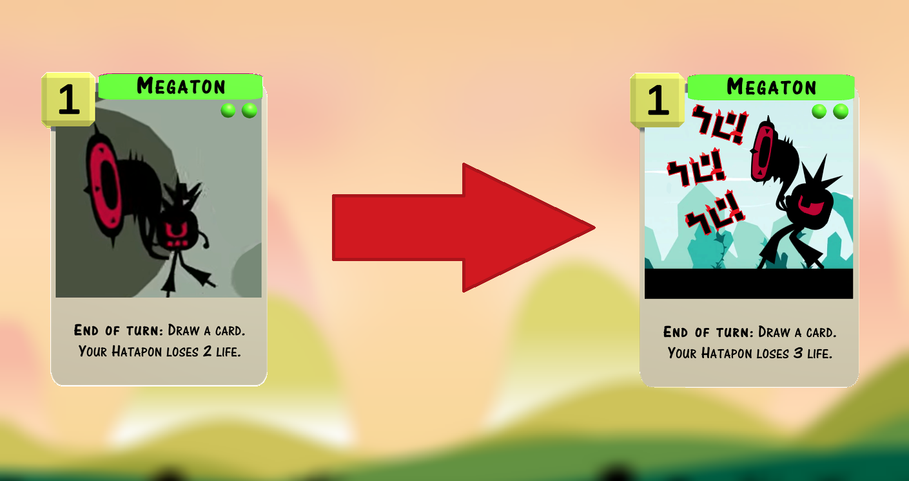
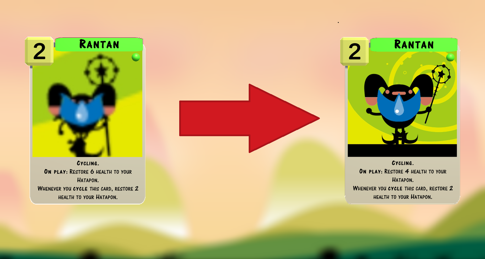
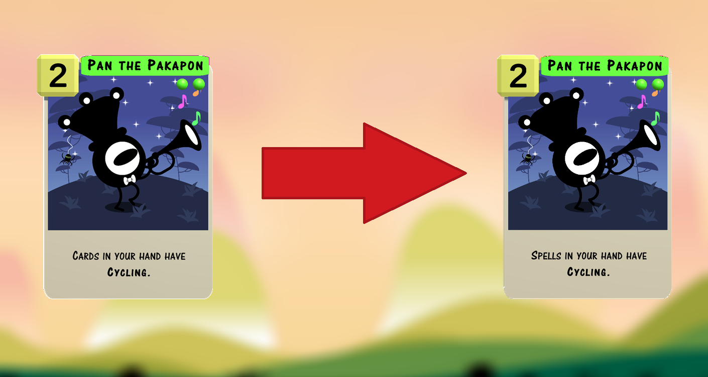
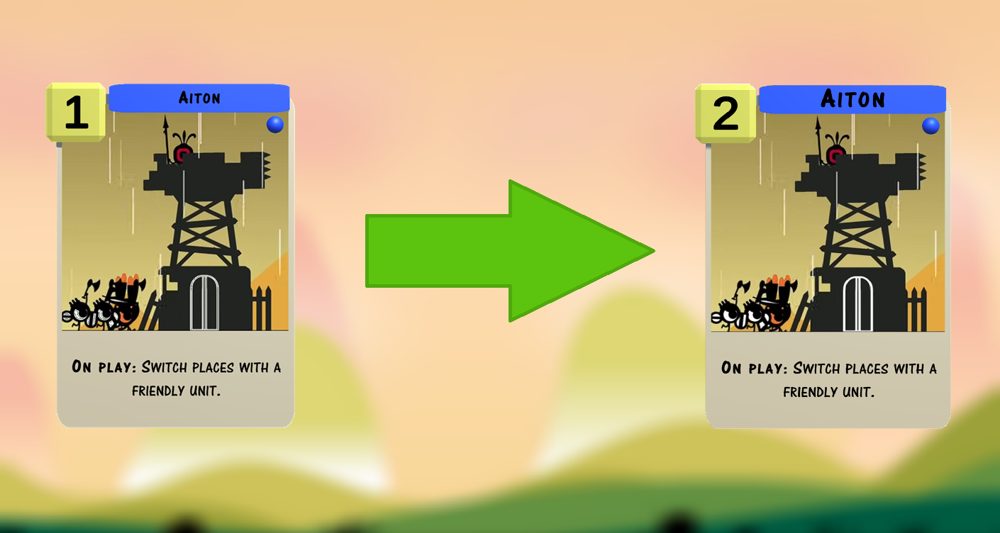
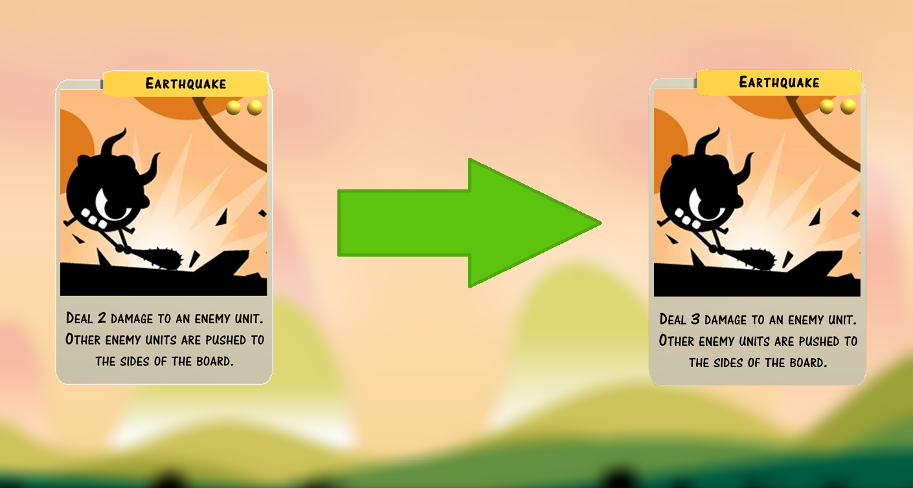
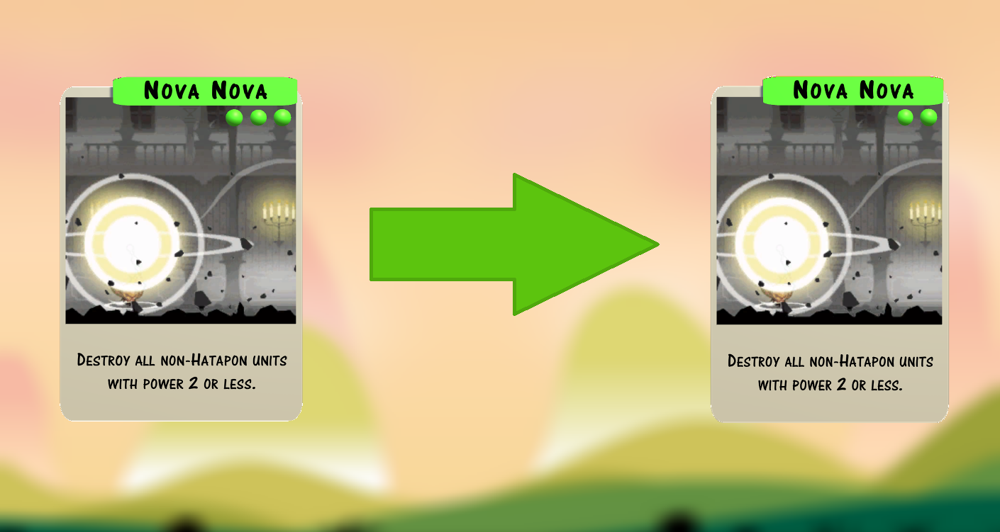
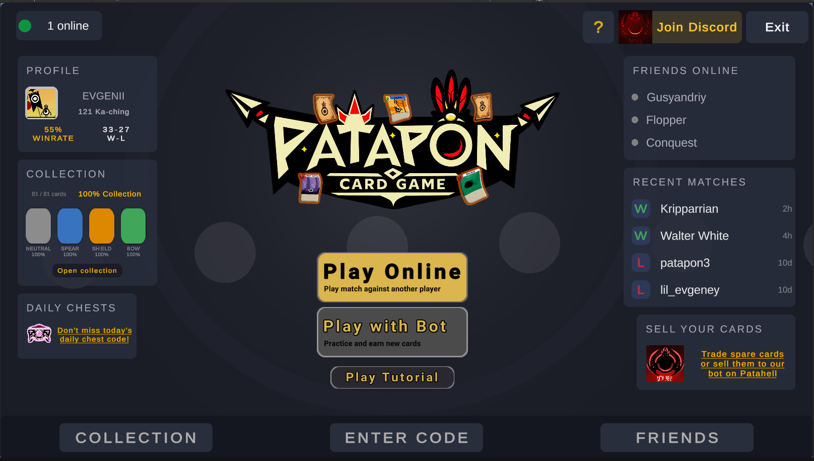

v1.0.6
Visual Updates, Bug Fixes, and Card Rebalance
This update makes several changes to problematic cards, fixes various bugs, and improves the game's visuals.
Balance Changes
Oharan
This card used to make games unfun by allowing players to kill their opponent as early as turn 3. It now prevents attacks on the enemy Hatapon and forces the strongest unit on each side of the board to clash, making the card more thematic.
Ban Tatepon
Ban Tatepon's condition was designed to be a challenge that players must overcome. However, many units with Pacifism start with 8 or more power, allowing this card to become active on turn 2. Ban now requires a unit with 10 or more power, slowing it down.
Treant
Treant is the only unit with 10 power that can enter the board on turn 1. We reduced its power by one to prevent it from activating Ban Tatepon.
Megaton
Megaton played on the first turn can become a nightmare if left unanswered. It now damages its controller by 3 instead of 2, making it less oppressive.
Rantan
Rantan is one of the most popular cards in the game. Healing for 6 in the late game is too powerful, so we reduced the amount to 4. This makes the card less oppressive and more balanced.
Pan Pakapon
Pan Pakapon is not very strong on its own, but it is part of a two-card combo with Don Yumipon that can win the game on the spot. This combination has its trade-offs, leaving you with no cards in your library once it is complete, but it also limits future design space. We decided to nerf Pan Pakapon to make this combo deck less consistent.
Aiton
Aiton is a card with a lot of potential, but it is currently too weak to see play. We increased its power to 2 to make it more viable.
Earthquake
Earthquake is another interesting card that sees almost no play. We increased its damage to 3 to make it more viable. It is now better than Fang, but requires two points of Shield devotion.
Nova Nova
We nerfed Nova Nova in the previous patch, but that change was too harsh. At its current power level, we believe it is appropriate to make it a two-devotion card.
Visual Updates
- The main menu UI has received a massive update. Be sure to check it out!

- The game board has been updated with a new design.
- Updated the artwork for Deadly Dispute and Megaton.
Collection Updates
- The collection now has a search bar to help you find cards faster.
- You can now buy and sell cards through our bot directly from the collection screen.
- To encourage players to play online, we increased the rewards for winning an online match against a real player.
Bug Fixes
- Pyokorider and Gong no longer freeze the game.
- Gan Yaripon now remembers its effects in the correct order.
- Myamsar destroying Wep with its On Attack effect no longer causes Wep's controller to draw an additional card.
- Treant on Fire, Bird Form, and Kiba Form now have the same devotion as their original cards.